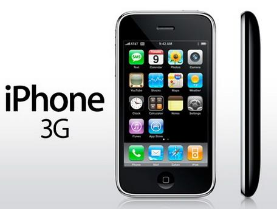

Mr Jobs singled out the Nokia N95 and Treo 750 phones when he presented the 3G version of the iPhone live, and said the 3G version of the iPhone's network features were similar, with five seconds to download the same email attachment, compared with 18 seconds for the last generation of iPhones that only supported the EDGE network. According to reports, the 3G version of the iPhone standby time of 300 hours, talk time from the original 8 hours to 10 hours, 3G network talk time of 5 hours, Internet access time of 5 to 6 hours, video playback time of 7 hours, audio playback time of 24 hours.
Jobs compared the speed of 3G and EDGE networks by browsing the photo-rich National Geographic website: the 3G version of the iPhone takes 21 seconds to load the site's home page, and the EDGE version of the iPhone takes 59 seconds. Jobs says 3G networks are almost as fast as Wi-Fi. Mr Jobs also revealed that the 3G version of the iPhone would be available simultaneously on July 11 in 22 countries and territories, including the US, UK, Australia, India and Hong Kong, China, Chinese mainland not included. Apple has previously signed sales agreements for new iPhones with operators in 70 countries. 